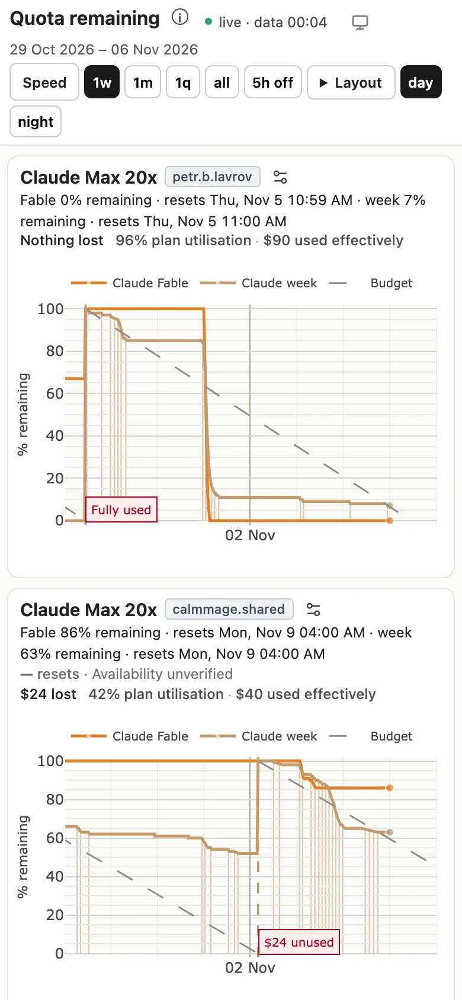
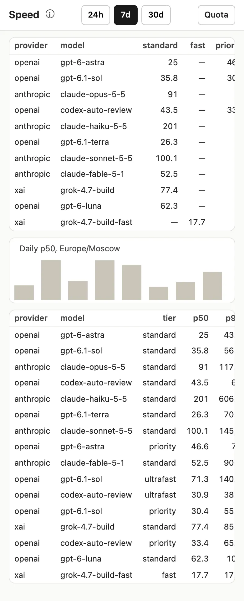
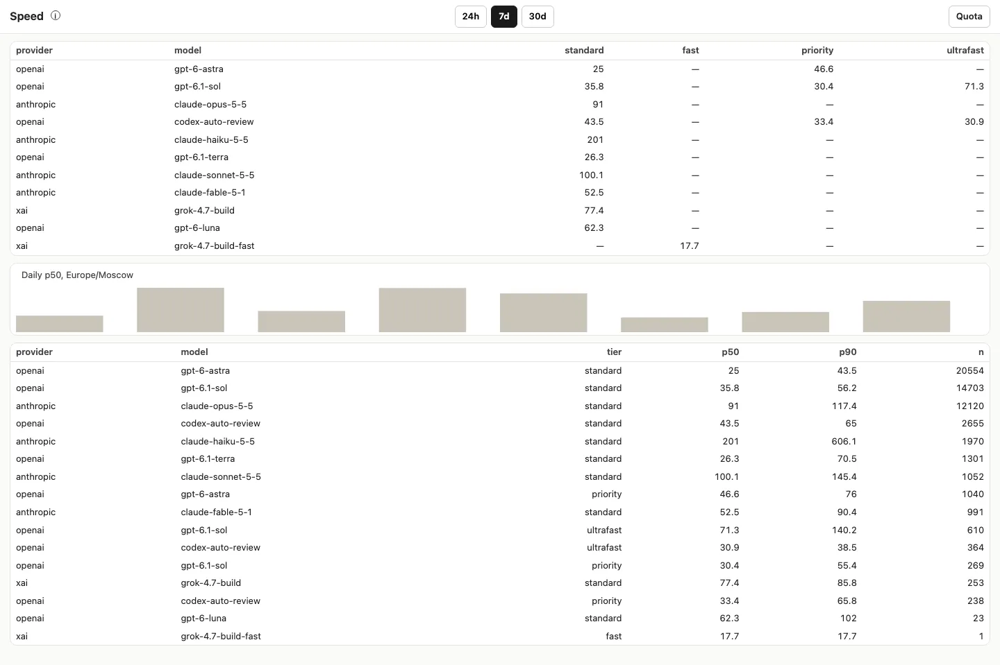
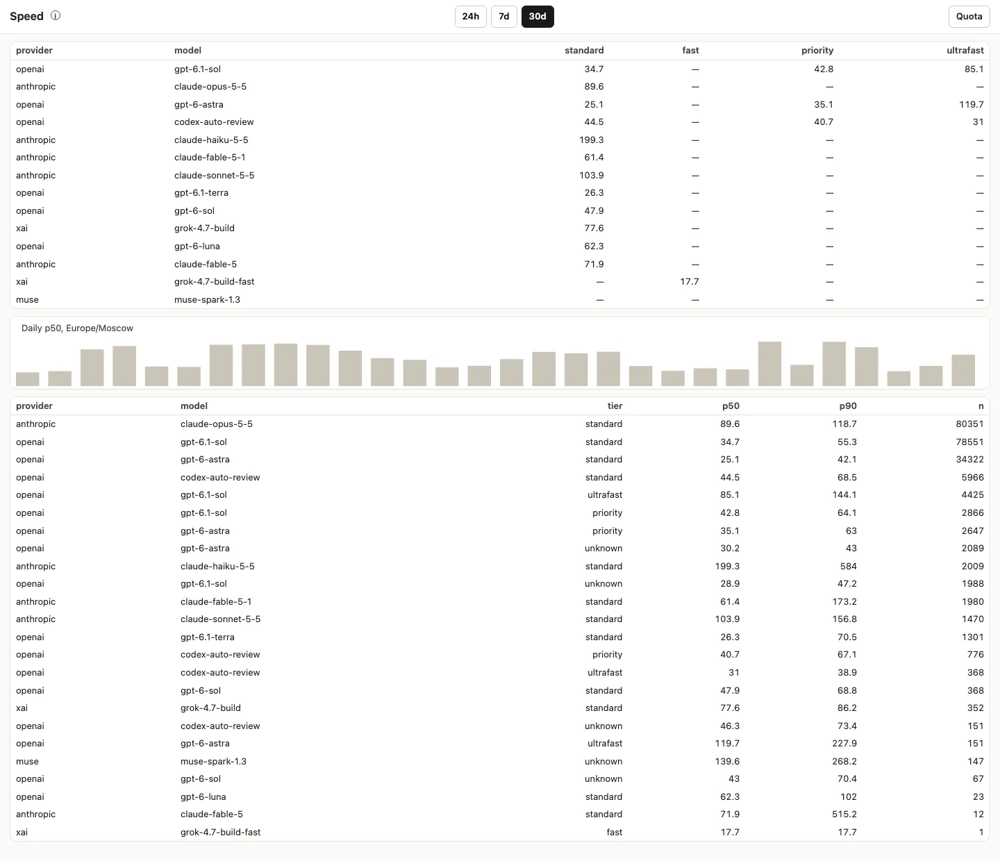
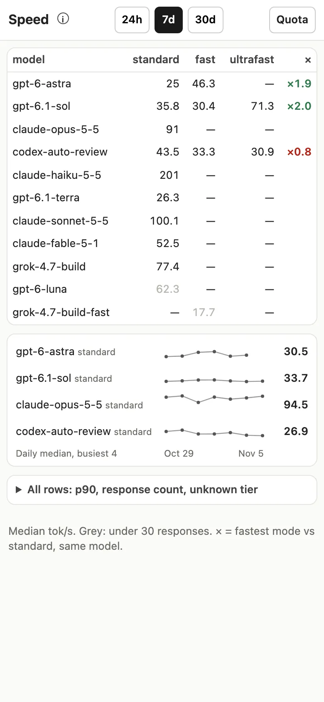
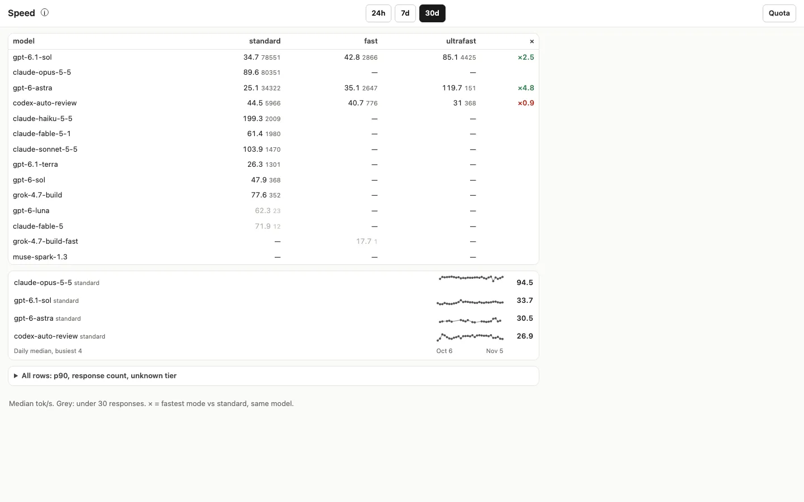
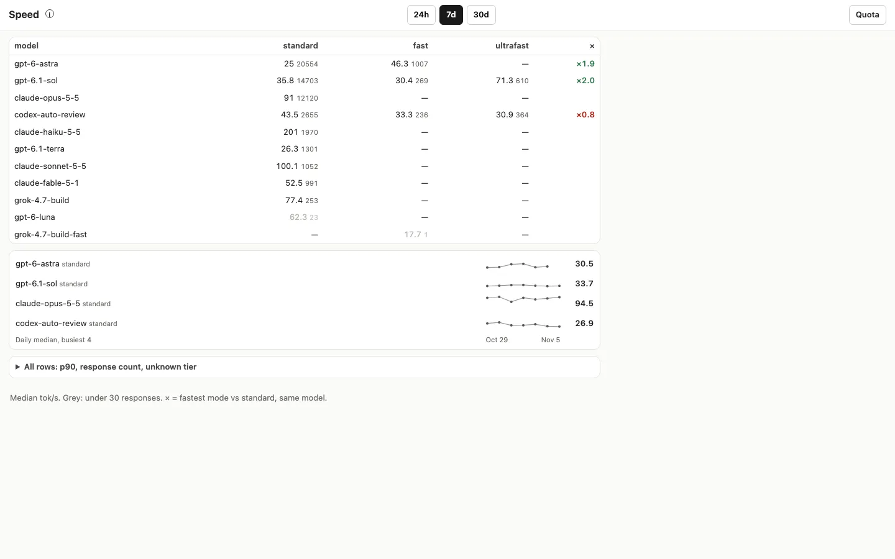

Shot 5 Nov from PR calmmage/ai-quotas#5, served locally on :8891Real data: 432,973 responses from this Mac's Claude, Codex, Grok and Muse logsPhone 390×844 and desktop 1440×900Top 5 fixed and re-shot
«I want a global 'tokens per second' tracknig for all models and providers AND the fast / ultrafast mode (for all ai chats) - on this mac» (Petr, 4 Nov). He opens the quota dashboard he already uses and wants to know how fast each model is, and how much fast mode buys.
1
Opens the quota dashboard

quota page, phone
Sees
«Quota remaining», then a row of buttons: «Speed», «1w», «1m», «1q», «all».
Taps
«Speed».
2
Speed page, as the builder left it

phone, 7 days

desktop, 7 days
Sees
A table «provider · model · standard · fast · priority · ultrafast», a grey bar chart «Daily p50, Europe/Moscow», then a second table with the same numbers by tier.
gets stuck
On the phone the «priority» and «ultrafast» columns are cut off with no scroll. The fast-mode answer he came for is off-screen.
The chart has no dates, no values and no model. It mixes every model into one median: 33.6 on 29 Oct, 90.5 on 30 Oct, only because Opus did more of the work that day.
Codex's fast mode shows as «priority» in its own column, next to an empty «fast».
«grok-4.7-build-fast 17.7» is one response, printed exactly like Opus's 12,120.
Nothing says how much faster fast mode is; he has to divide in his head.
3
Switches to 30 days

desktop, 30 days, before
Taps
«30d». The tables refill in about 0.3 s.
gets stuck
The second table repeats the first, now 16 rows long; the page reads as two copies of one list.
4
Speed page, after the fixes

phone, 7 days

desktop, 30 days

desktop, 7 days
Sees
One table «model · standard · fast · ultrafast · ×». Over 7 days: gpt-6.1-sol 35.8 standard, 71.3 ultrafast, «×2.0»; gpt-6-astra 25 → 46.3 fast, «×1.9»; codex-auto-review «×0.8» in red. Opus 91, Haiku 201. Below: four small lines, one per busy model, «Oct 29 … Nov 5», latest median on the right.
Fixed
All five frictions below. Full detail (p90, counts, unknown tier) folds under «All rows».
!
Top 5
Fast and ultrafast columns cut off on the phone.390 px showed «standard · fast · prior…».Fixed: provider moved into the model tooltip, counts hidden under 520 px, the table scrolls sideways if it ever overflows. All five columns fit.
The chart measured the model mix, not speed.One median over all models, no dates or values.Fixed: one line per busiest model and tier, shared scale, dates under the axis, latest value printed, hover shows date · tok/s · responses.
No answer to «how much does fast mode buy».He had to divide 71.3 by 35.8.Fixed: a «×» column: fastest mode vs standard for the same model, green above ×1.15, red below ×0.95, only when both sides have 30+ responses.
Codex «priority» in a separate column from «fast».Two half-empty columns for the same idea.Fixed: one «fast» column; a Codex cell says «Codex priority» on hover. Raw tier names stay in «All rows».
One response looked as solid as twelve thousand.«grok-4.7-build-fast 17.7», n = 1.Fixed: under 30 responses the value is grey and says «too few to trust» on hover; counts sit next to each value on desktop. The duplicate table is folded.
For youMerge PR calmmage/ai-quotas#5, then in /Users/petrlavrov/calm/projects/p-ai-quotas: git pull && make deploy (installs the 10-minute scan and restarts the dashboard).